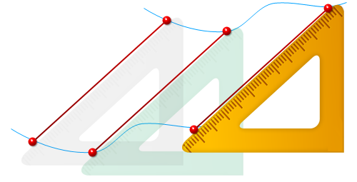
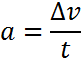
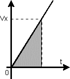
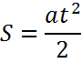
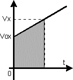
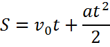
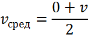
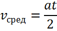
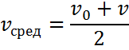
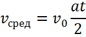

Поступательное движениеПоступательное движение, это наиболее простое движение тела, при котором все точки тела движутся одинаково, описывая одинаковые траектории.  Примечание: Можно доказать, что при поступательном движении любая прямая, проведенная в теле, остается параллельной самой себе. Этим характерным признаком удобно пользоваться, чтобы ответить на вопрос, является ли данное движение тела поступательным. Соотношения между скоростью, перемещением и временем для всех видов поступательного движения можно определить, используя график скорости (зависимость u от t). График позволяет определить величину скорости в любой момент времени и перемещение тела к этому моменту (оно равно площади под кривой). Кроме того, для установления законов движения, т.е. соотношения между назваными величинами, удобно воспользоваться графиком перемещения (пути) (зависимость s от t) и графиком ускорения (зависимость a от t). Равномерно ускоренное движениеПоступательное движение называется равномерно ускоренным, если
 a — ускорение,∆u — изменение скорости (увеличение или уменьшение) t — время, за которое происходит изменение скорости Равномерно ускоренное движение без начальной скоростиТело начинает двигаться равноускоренно из состояния покоя.  На графике скорости перемещение равно площади треугольника  Здесь: Равномерно ускоренное движение с начальной скоростьюНачальная скорость U0. т.е. скорость, которой тело обладало в момент времени t=0 Пройденный путь, на графике скорости, соответсвует площади трапеции:   Средняя скоростьСредняя скорость для равномерно ускоренного движения без начальной скоростСредняя скорость Uсред движения равна среднему арифметическому начальной и конечной скоростей  Здесь: Также средняя скорость выражается через ускорение  Здесь: Средняя скорость для равномерно ускоренного движения с начальной скоростьСредняя скорость Uсред движения равна среднему арифметическому начальной и конечной скоростей  Здесь: Также средняя скорость выражается через ускорение  Здесь: |